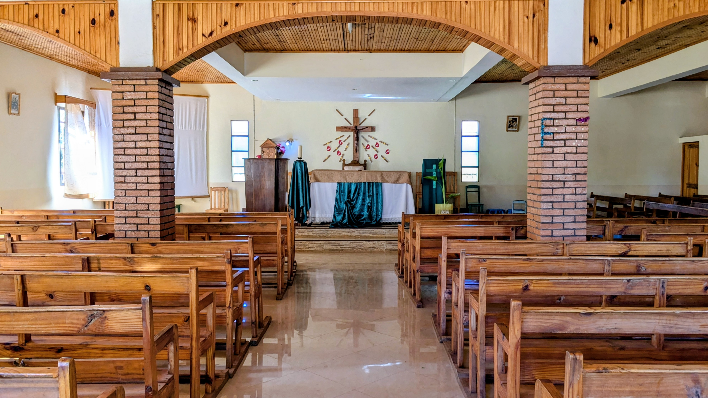
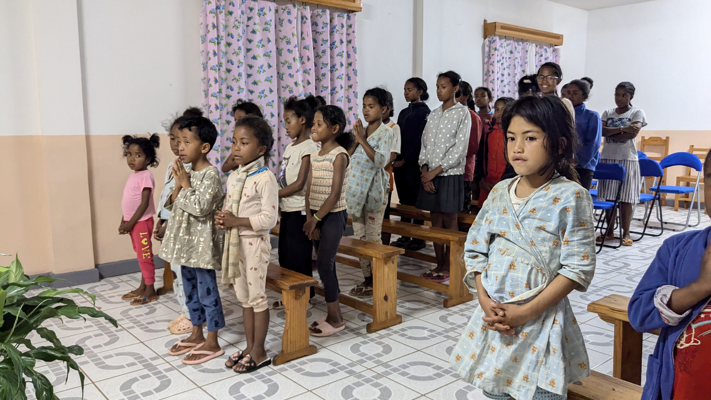
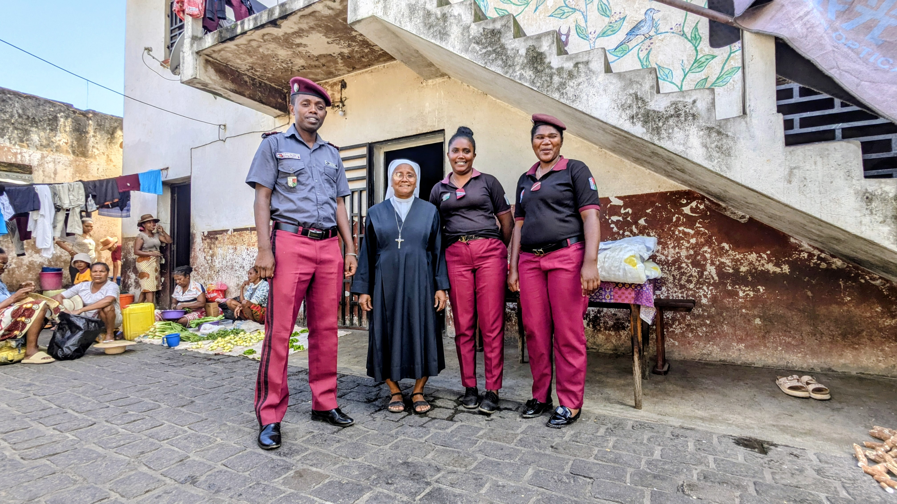

IZAY REHETRA ATAONAREO DIA ATAOVY AMIN'NY FITIAVANA
NY MAHA OLONA FENO .
SEKOLY
Amin'ny ankapobeny dia misehatra amin'ny fitantanana sekoly no ahafantaran'ny rehetra anay. Ary ny toerana rehetra izay misy anay dia misy sekoly avokoa. Raha te-hanana taranaka vanona sy ho tafita amin'ny fiainana isika dia ny fanabeazana no atao laharam-pahamehana .

ASA PASTORALY
Amin'ny maha relijiozy anay dia miaina tsy afa-misaraka amin'ny Fiangonana ny fikambanana. Mandray anjara feno ihany koa amin'ny asa fampitàna ny finoana. Ny masera mpikambana dia zoky am-panahy amin'ny fikambanana masina ,mizara komonio , mampianatra katesizy , ary miandraikitra ny sakristie , sns...

FITSABOANA ARY FIKARAKARANA NY MARARY
Mandray an-tanana ny fitsaboana ireo marary izahay , na amin'ny toerana misy ny Dispensaire iandreketanay na amin'ny toerana tsotra izany "Ny fahasalamana no voalohan-karena ".

Fiahiana ara-tsosialy ny maha olona
Tsy mijanona fotsiny amin'ny fanabeazana izahay fa miahy ihany koa ny maha olona. Manome sakafo feno ara-pahasalamana an'ireo izay rehetra mila an'izany. Manafy ny tsy manana ho tafiana , mampiantrano an'ireo tsy manan-kialofana . Mitsimbina an'ireo mahantra sy marefo

Famangiana ny be antitra sy ny olona marefo
Ao anatin'ny asanay ihany koa ny famangiana ny be antitra ,mitondra ny vatsy masina "Eokaristia" ho azy ireo any amin'ny teorana izay misy azy.

Fandraisana an'ireo zaza kamboty
Mandray an-tanana an'ireo zaza kamboty izahay , mampianatra sy manabe ary mitaiza azy ireo ho tonga olom-banona ary hisitrahan'izy ireo ny zo feno maha olona azy.

Mamangy ny voafonja
Mandeha mamangy an'ireo olona voafonja izahay , tsy mamela azy ireo ho mahatsapa tena ho irery na dia heverina amin'ny toerana lavitry ny fiaraha-monina sy ny havana aza.